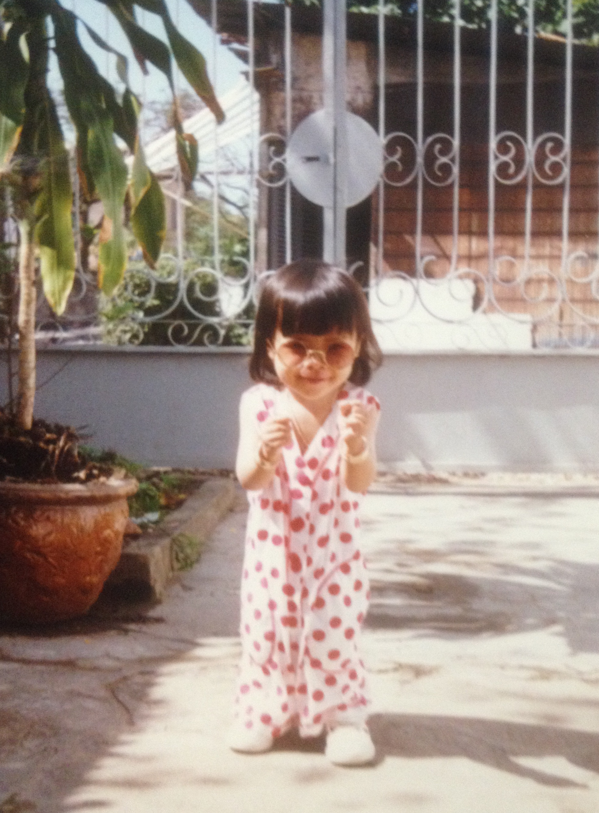
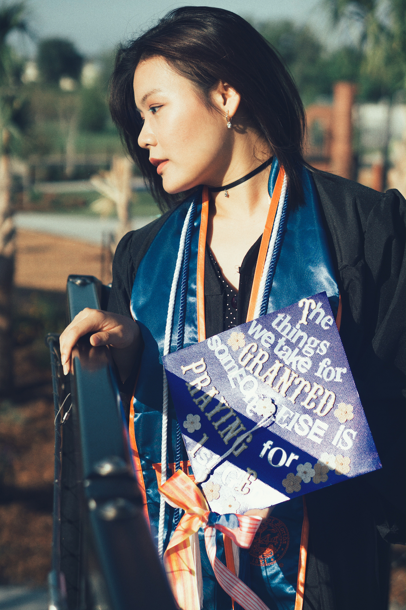
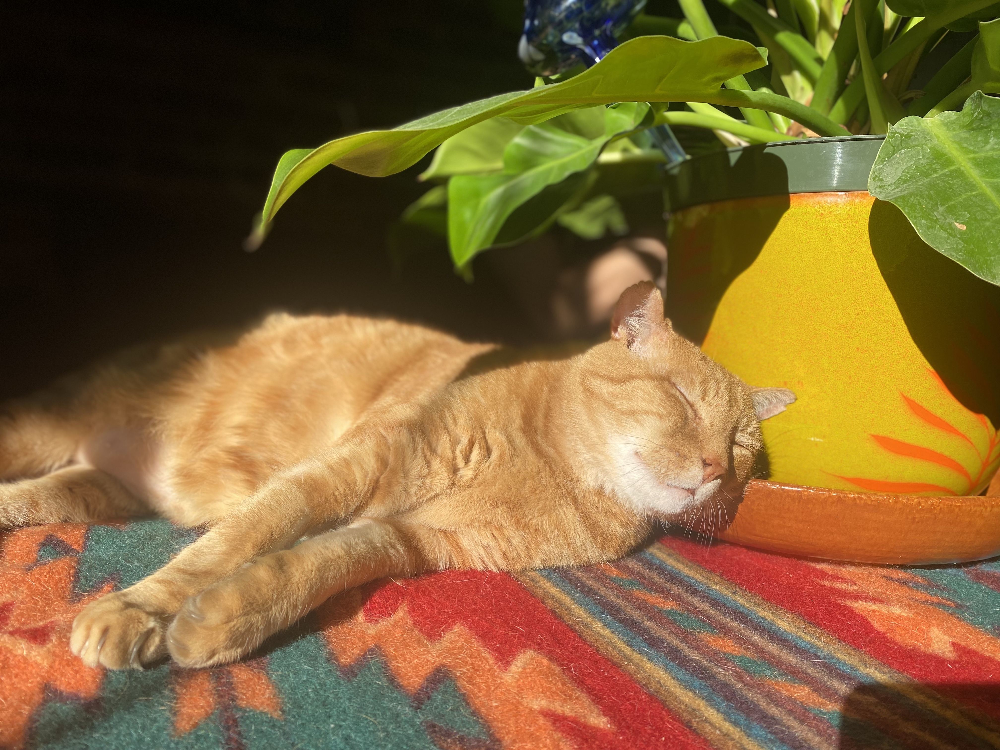
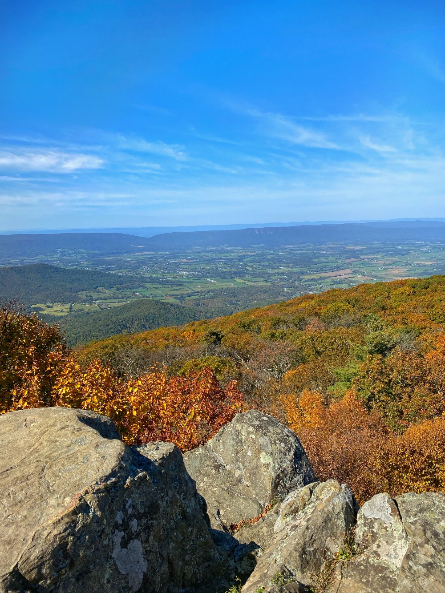
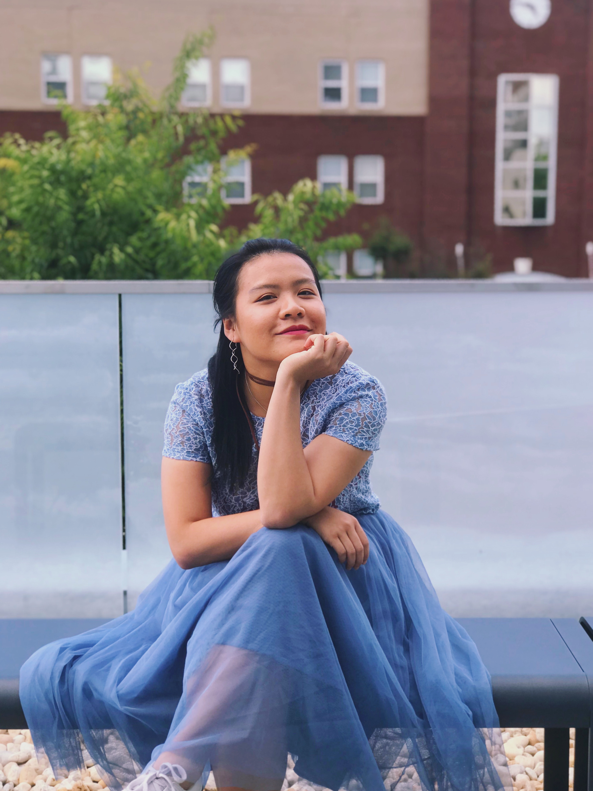

Quynh Pham

Background
I was born and raised in Vietnam, and I came to Arlington, Virginia at the age of 10.
My grandfather was a Vietnamese veteran whom went into reeduation camp for 5 years, and was brought to the States under the subprogram called Humanitarian Operation (HO), under the Orderly Departure Program that started in 1979 and ended in 1994.
I am fluent in speaking, writing, and speaking both English and Vietnamese. Despite being the only child in the family, I am the only fluent English speaker in the family, therefore, I started to take some of the adults' responsibilities at the age of 12.
I have spent my pandemic years and some time before that to learn about myself and re-discover my interests and hobbies.
Over the past few years, I have learned to be comfortable with myself. I think it's important to know yourself in order to take care of yourself.
Recently, I have been diagnosed with ADD and I am still learning and re-learning about the diagnosis, as well as how it affects me as a person. A podcast that has been helping me is called "Women & ADHD" by Katie Weber. I think she has really helped me with figuring out which part is the ADD in me, and which part might be just part of who I am.
Here is a link if anyone wants to give it a listen!
( Women and ADHD Podcast )
I am also an introvert, but I will socialize if I can take the next day to myself. I am a structured person, so I do have a rigid schedule.
Usually, if I have to socialize, plans will have to be made at least 3 days in advanced. I do not like surprises or last-minute plans unless it is an emergency ( I think my ADD brain just doesn't like to feel out of control and flustered).
I also dislike the feeling of wasting time on non-productive tasks, and it really does stress me out. I am essentially a grumpy grandma living in a 28 year old body.
I wake up at 5 AM everyday to go to the gym at 5:30AM and leave at 6:30AMa. Between 6:30 AM - 8:30 AM, I showered, make breakfast, prepared for dinner if I need to, clean up, and eat.
By 8:30 AM or 9 AM, I start tackling all my schoolwork until 4:30 PM or 5:00 PM.
Education

- I attended Oakridge Elementary School in Arlington,Virignia from 3rd grade to 5th grade.
- I then moved to Orlando, Florida for 7th grade and 8th grade.
- For high school, I attended a Medical Magnet Program which allowed me to start basic medical courses such as Medical terminology, and Physiology along with clinicals. On top of these courses, I took Honors and AP classes for the four years of high school.
- In 2014, I attended Univeristy of Florida with the Machen Florida Opportunity Scholarship (MFOS), which provided a full ride for my education. I started out as a Dance major with Pre-med tracking, then changed to Nutrition with Pre-med tracking and I hated it. At last, I graduated with a Criminology major, still on Pre-med track.
- In 2018, I attended Virginia Commonwealth University for Pharmacy school, and after about 2 years, I came to terms with myself that it was not a career that I want to spend the rest of my life in, so I left the program.
- I wanted to spend some time alone to learn about myself instead of letting my family and others around me dictating my life, so I was working full time as a pharmacy technician from 2019-2022
- As of 2023, I am now attending the University of Florida once again for my Masters in Web Design.
Family

I am the only child in the family. My paternal grandparents are here in the States, but we don't keep in touch after my dad passed in 2018.
My maternal grandparents passed when I was around 4 or 5, and everyone on my mom's side of the family is still in Vietnam.
I am currently in a relationship of 3 years and we have a orange tabby cat named Fibonacci - we called him Fib for Bubba for short. He has FIV, which is Feline Immunodeficiency Virus (which is similar to HIV) from his mom.
Fib was at the shelter for about one year or so, and was one of the long-term residents there because no one wanted to adopt him due to his FIV condition. I ended up adopting him becasue of how friendly he is, and even though he has not lost any weight since the adoption (still at 20lbs), he is a happy cat!
Interests and Hobbies

- Dancing is one of my main hobbies just because it's such a great outlet for me, emotionally and physically. I am currently taking Swing and Jazz dance classes as my latest dance obsession.
- Photography is also a hobby of mine, even though I do not have the time to do it consistently now.
- I am not trying to sound like a gym geek, but I do enjoy going to the gym.
As someone with ADD, some of my coexisting conditions are depression and anxiety. Therefore, going to the gym allows me to release my burst of energy, but it also makes me feel less anxious and better about myself mentally.
- I also love to eat, but I don't like to spend money eating out, so I end up cooking and baking at home instead. I cook for at least 5 days a week, and most of my baking takes place on the weekend.
- I also love to go on a hike even though I am not good at it. I think the view of nature is very relaxing and calming. It makes me forget how chaotic and fast life moves.
- As of the last year, I got into gardening so I guess that is also one of my newer interests. I grew some herbs, tomatoes, and okra last year, but the winter killed most of my plants except the herbs. I think I would like to re-grow some more plants this year.
- Just like lots of other women during the pandemic, I also became a plant mom. Over the past two years, my plant collection grew from zero to about ten or eleven. Luckily, they are still alive somehow.
Career Goals

- Realistically, I would love to get a job in this field when I am done with the program.
- I would like to have a government or non-profit job that can help me with my studen loan forgiveness. It would be a major plus if I like the job as well.
- If possible, I would love the opportunities to grow professionally in my next job.
- I don't have specific goals just because there are so many unknown opportunities out there between now and next year. I just hope that I will be able to hold on to whatever opportunity that comes my way before it's too late.